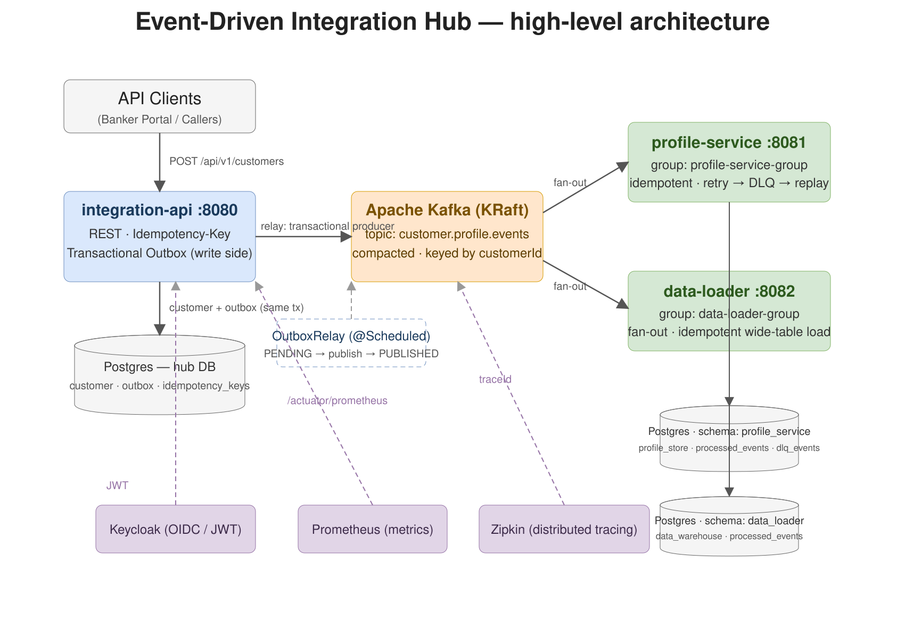

Spring Boot 3 + Kafka integration POC · personal learning project · diagram is a simplified illustration, not any bank's internal structure

Editable source: architecture.drawio (open with diagrams.net). Kong API Gateway is shown as a production proposal — documented in design.md, not part of the local demo stack.